Context2D QML Type
Provides 2D context for shapes on a Canvas item. More...
| Import Statement: | import QtQuick |
Properties
- canvas : QtQuick::Canvas
- fillRule : enumeration
- fillStyle : variant
- font : string
- globalAlpha : real
- globalCompositeOperation : string
- lineCap : string
- lineDashOffset : real
(since QtQuick 2.11) - lineJoin : string
- lineWidth : real
- miterLimit : real
- shadowBlur : real
- shadowColor : string
- shadowOffsetX : qreal
- shadowOffsetY : qreal
- strokeStyle : variant
- textAlign : string
- textBaseline : string
Methods
- object arc(real x, real y, real radius, real startAngle, real endAngle, bool anticlockwise)
- object arcTo(real x1, real y1, real x2, real y2, real radius)
- object beginPath()
- object bezierCurveTo(real cp1x, real cp1y, real cp2x, real cp2y, real x, real y)
- object clearRect(real x, real y, real w, real h)
- object clip()
- object closePath()
- object createConicalGradient(real x, real y, real angle)
- CanvasImageData createImageData(real sw, real sh)
- CanvasImageData createImageData(CanvasImageData imageData)
- CanvasImageData createImageData(Url imageUrl)
- object createLinearGradient(real x0, real y0, real x1, real y1)
- variant createPattern(color color, enumeration patternMode)
- variant createPattern(Image image, string repetition)
- object createRadialGradient(real x0, real y0, real r0, real x1, real y1, real r1)
- drawImage(variant image, real dx, real dy)
- drawImage(variant image, real dx, real dy, real dw, real dh)
- drawImage(variant image, real sx, real sy, real sw, real sh, real dx, real dy, real dw, real dh)
- object ellipse(real x, real y, real w, real h)
- object fill()
- object fillRect(real x, real y, real w, real h)
- object fillText(text, x, y)
- CanvasImageData getImageData(real x, real y, real w, real h)
- array getLineDash()
(since QtQuick 2.11) - object isPointInPath(real x, real y)
- object lineTo(real x, real y)
- object measureText(text)
- object moveTo(real x, real y)
- object putImageData(CanvasImageData imageData, real dx, real dy, real dirtyX, real dirtyY, real dirtyWidth, real dirtyHeight)
- object quadraticCurveTo(real cpx, real cpy, real x, real y)
- object rect(real x, real y, real w, real h)
- object reset()
- object resetTransform()
- object restore()
- object rotate(real angle)
- object roundedRect(real x, real y, real w, real h, real xRadius, real yRadius)
- object save()
- object scale(real x, real y)
- setLineDash(array pattern)
(since QtQuick 2.11) - object setTransform(real a, real b, real c, real d, real e, real f)
- object shear(real sh, real sv)
- object stroke()
- object strokeRect(real x, real y, real w, real h)
- object strokeText(text, x, y)
- object text(string text, real x, real y)
- object transform(real a, real b, real c, real d, real e, real f)
- object translate(real x, real y)
Detailed Description
The Context2D object can be created by Canvas item's getContext() method:
Canvas { id:canvas onPaint:{ var ctx = canvas.getContext('2d'); //... } }
The Context2D API implements the same W3C Canvas 2D Context API standard with some enhanced features.
The Context2D API provides the rendering context which defines the methods and attributes needed to draw on the Canvas item. The following assigns the canvas rendering context to a context variable:
var context = mycanvas.getContext("2d")
The Context2D API renders the canvas as a coordinate system whose origin (0,0) is at the top left corner, as shown in the figure below. Coordinates increase along the x axis from left to right and along the y axis from top to bottom of the canvas.
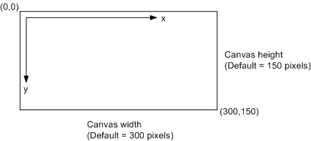
Property Documentation
canvas : QtQuick::Canvas |
Holds the canvas item that the context paints on.
This property is read only.
fillRule : enumeration |
Holds the current fill rule used for filling shapes. The following fill rules are supported:
| Constant | Description |
|---|---|
Qt.OddEvenFill | Qt::OddEvenFill |
Qt.WindingFill | (default) Qt::WindingFill |
Note: Unlike QPainterPath, the Canvas API uses the winding fill as the default fill rule. The fillRule property is part of the context rendering state.
See also fillStyle.
fillStyle : variant |
Holds the current style used for filling shapes. The style can be either a string containing a CSS color, a CanvasGradient or CanvasPattern object. Invalid values are ignored. This property accepts several color syntaxes:
- 'rgb(red, green, blue)' - for example: 'rgb(255, 100, 55)' or 'rgb(100%, 70%, 30%)'
- 'rgba(red, green, blue, alpha)' - for example: 'rgb(255, 100, 55, 1.0)' or 'rgb(100%, 70%, 30%, 0.5)'
- 'hsl(hue, saturation, lightness)'
- 'hsla(hue, saturation, lightness, alpha)'
- '#RRGGBB' - for example: '#00FFCC'
- Qt.rgba(red, green, blue, alpha) - for example: Qt.rgba(0.3, 0.7, 1, 1.0)
If the fillStyle or strokeStyle is assigned many times in a loop, the last Qt.rgba() syntax should be chosen, as it has the best performance, because it's already a valid QColor value, does not need to be parsed everytime.
The default value is '#000000'.
See also createLinearGradient(), createRadialGradient(), createPattern(), and strokeStyle.
font : string |
Holds the current font settings.
A subset of the w3C 2d context standard for font is supported:
- font-style (optional): normal | italic | oblique
- font-variant (optional): normal | small-caps
- font-weight (optional): normal | bold | 1 ... 1000
- font-size: Npx | Npt (where N is a positive number)
- font-family: See http://www.w3.org/TR/CSS2/fonts.html#propdef-font-family
Note: The font-size and font-family properties are mandatory and must be in the order they are shown in above. In addition, a font family with spaces in its name must be quoted.
The default font value is "10px sans-serif".
globalAlpha : real |
Holds the current alpha value applied to rendering operations. The value must be in the range from 0.0 (fully transparent) to 1.0 (fully opaque). The default value is 1.0.
globalCompositeOperation : string |
Holds the current the current composition operation. Allowed operations are:
| Constant | Description |
|---|---|
"source-atop" | QPainter::CompositionMode_SourceAtop A atop B. Display the source image wherever both images are opaque. Display the destination image wherever the destination image is opaque but the source image is transparent. Display transparency elsewhere. |
"source-in" | QPainter::CompositionMode_SourceIn A in B. Display the source image wherever both the source image and destination image are opaque. Display transparency elsewhere. |
"source-out" | QPainter::CompositionMode_SourceOut A out B. Display the source image wherever the source image is opaque and the destination image is transparent. Display transparency elsewhere. |
"source-over" | QPainter::CompositionMode_SourceOver (default) A over B. Display the source image wherever the source image is opaque. Display the destination image elsewhere. |
"destination-atop" | QPainter::CompositionMode_DestinationAtop B atop A. Same as source-atop but using the destination image instead of the source image and vice versa. |
"destination-in" | QPainter::CompositionMode_DestinationIn B in A. Same as source-in but using the destination image instead of the source image and vice versa. |
"destination-out" | QPainter::CompositionMode_DestinationOut B out A. Same as source-out but using the destination image instead of the source image and vice versa. |
"destination-over" | QPainter::CompositionMode_DestinationOver B over A. Same as source-over but using the destination image instead of the source image and vice versa. |
"lighter" | QPainter::CompositionMode_Plus A plus B. Display the sum of the source image and destination image, with color values approaching 255 (100%) as a limit. |
"copy" | QPainter::CompositionMode_Source A (B is ignored). Display the source image instead of the destination image. |
"xor" | QPainter::CompositionMode_Xor A xor B. Exclusive OR of the source image and destination image. |
"qt-clear" | QPainter::CompositionMode_Clear |
"qt-destination" | QPainter::CompositionMode_Destination |
"qt-multiply" | QPainter::CompositionMode_Multiply |
"qt-screen" | QPainter::CompositionMode_Screen |
"qt-overlay" | QPainter::CompositionMode_Overlay |
"qt-darken" | QPainter::CompositionMode_Darken |
"qt-lighten" | QPainter::CompositionMode_Lighten |
"qt-color-dodge" | QPainter::CompositionMode_ColorDodge |
"qt-color-burn" | QPainter::CompositionMode_ColorBurn |
"qt-hard-light" | QPainter::CompositionMode_HardLight |
"qt-soft-light" | QPainter::CompositionMode_SoftLight |
"qt-difference" | QPainter::CompositionMode_Difference |
"qt-exclusion" | QPainter::CompositionMode_Exclusion |
In compliance with the W3C standard, the extended composition modes beyond the required modes are provided as "vendorName-operationName" syntax, for example: QPainter::CompositionMode_Exclusion is provided as "qt-exclusion".
lineCap : string |
Holds the current line cap style. The possible line cap styles are:
| Constant | Description |
|---|---|
"butt" | (default) Qt::FlatCap the end of each line has a flat edge perpendicular to the direction of the line. |
"round" | Qt::RoundCap a semi-circle with the diameter equal to the width of the line is added on to the end of the line. |
"square" | Qt::SquareCap a rectangle with the length of the line width and the width of half the line width, placed flat against the edge perpendicular to the direction of the line. |
Other values are ignored.
lineDashOffset : real |
Holds the current line dash offset. The default line dash offset value is 0.
This property was introduced in QtQuick 2.11.
See also getLineDash() and setLineDash().
lineJoin : string |
Holds the current line join style. A join exists at any point in a subpath shared by two consecutive lines. When a subpath is closed, then a join also exists at its first point (equivalent to its last point) connecting the first and last lines in the subpath.
The possible line join styles are:
| Constant | Description |
|---|---|
"bevel" | Qt::BevelJoin The triangular notch between the two lines is filled. |
"round" | Qt::RoundJoin A circular arc between the two lines is filled. |
"miter" | (default) Qt::MiterJoin The outer edges of the lines are extended to meet at an angle, and this area is filled. |
Other values are ignored.
lineWidth : real |
Holds the current line width. Values that are not finite values greater than zero are ignored.
miterLimit : real |
Holds the current miter limit ratio. The default miter limit value is 10.0.
shadowBlur : real |
Holds the current level of blur applied to shadows
shadowColor : string |
Holds the current shadow color.
shadowOffsetX : qreal |
Holds the current shadow offset in the positive horizontal distance.
See also shadowOffsetY.
shadowOffsetY : qreal |
Holds the current shadow offset in the positive vertical distance.
See also shadowOffsetX.
strokeStyle : variant |
Holds the current color or style to use for the lines around shapes, The style can be either a string containing a CSS color, a CanvasGradient or CanvasPattern object. Invalid values are ignored.
The default value is '#000000'.
See also createLinearGradient(), createRadialGradient(), createPattern(), and fillStyle.
textAlign : string |
Holds the current text alignment settings. The possible values are:
| Constant | Description |
|---|---|
"start" | (default) Align to the start edge of the text (left side in left-to-right text, right side in right-to-left text). |
"end" | Align to the end edge of the text (right side in left-to-right text, left side in right-to-left text). |
"left" | Qt::AlignLeft |
"right" | Qt::AlignRight |
"center" | Qt::AlignHCenter |
Other values are ignored.
textBaseline : string |
Holds the current baseline alignment settings. The possible values are:
| Constant | Description |
|---|---|
"top" | The top of the em square |
"hanging" | The hanging baseline |
"middle" | The middle of the em square |
"alphabetic" | (default) The alphabetic baseline |
"ideographic" | The ideographic-under baseline |
"bottom" | The bottom of the em square |
Other values are ignored. The default value is "alphabetic".
Method Documentation
Adds an arc to the current subpath that lies on the circumference of the circle whose center is at the point (x, y) and whose radius is radius.
Both startAngle and endAngle are measured from the x-axis in radians.
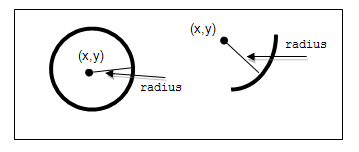
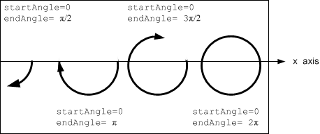
The anticlockwise parameter is false for each arc in the figure above because they are all drawn in the clockwise direction.
See also arcTo and W3C's 2D Context Standard for arc().
Adds an arc with the given control points and radius to the current subpath, connected to the previous point by a straight line. To draw an arc, you begin with the same steps you followed to create a line:
- Call the beginPath() method to set a new path.
- Call the moveTo(
x,y) method to set your starting position on the canvas at the point (x,y). - To draw an arc or circle, call the arcTo(x1, y1, x2, y2, radius) method. This adds an arc with starting point (x1, y1), ending point (x2, y2), and radius to the current subpath and connects it to the previous subpath by a straight line.
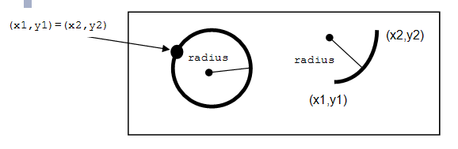
See also arc and W3C's 2D Context Standard for arcTo().
object beginPath() |
Resets the current path to a new path.
Adds a cubic bezier curve between the current position and the given endPoint using the control points specified by (cp1x, cp1y), and (cp2x, cp2y). After the curve is added, the current position is updated to be at the end point (x, y) of the curve. The following code produces the path shown below:
ctx.strokeStyle = Qt.rgba(0, 0, 0, 1); ctx.lineWidth = 1; ctx.beginPath(); ctx.moveTo(20, 0);//start point ctx.bezierCurveTo(-10, 90, 210, 90, 180, 0); ctx.stroke();
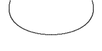
See also W3C 2d context standard for bezierCurveTo and The beautiful flower demo by using bezierCurveTo.
Clears all pixels on the canvas in the rectangle specified by (x, y, w, h) to transparent black.
object clip() |
Creates the clipping region from the current path. Any parts of the shape outside the clipping path are not displayed. To create a complex shape using the clip() method:
- Call the
context.beginPath()method to set the clipping path. - Define the clipping path by calling any combination of the
lineTo,arcTo,arc,moveTo, etc andclosePathmethods. - Call the
context.clip()method.
The new shape displays. The following shows how a clipping path can modify how an image displays:
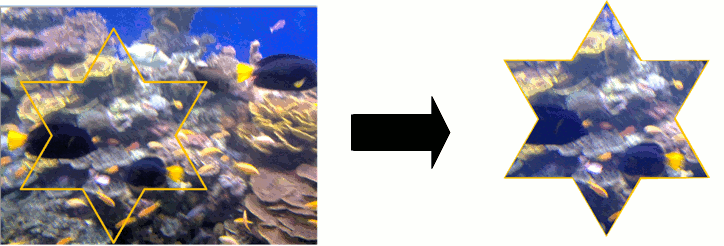
See also beginPath(), closePath(), stroke(), fill(), and W3C 2d context standard for clip.
object closePath() |
Closes the current subpath by drawing a line to the beginning of the subpath, automatically starting a new path. The current point of the new path is the previous subpath's first point.
See also W3C 2d context standard for closePath.
Returns a CanvasGradient object that represents a conical gradient that interpolates colors counter-clockwise around a center point (x, y) with a start angle angle in units of radians.
See also CanvasGradient::addColorStop(), createLinearGradient(), createRadialGradient(), createPattern(), fillStyle, and strokeStyle.
CanvasImageData createImageData(real sw, real sh) |
Creates a CanvasImageData object with the given dimensions(sw, sh).
CanvasImageData createImageData(CanvasImageData imageData) |
Creates a CanvasImageData object with the same dimensions as the imageData argument.
CanvasImageData createImageData(Url imageUrl) |
Creates a CanvasImageData object with the given image loaded from imageUrl.
Note: The imageUrl must be already loaded before this function call, otherwise an empty CanvasImageData obect will be returned.
See also Canvas::loadImage(), QtQuick::Canvas::unloadImage(), and QtQuick::Canvas::isImageLoaded.
Returns a CanvasGradient object that represents a linear gradient that transitions the color along a line between the start point (x0, y0) and the end point (x1, y1).
A gradient is a smooth transition between colors. There are two types of gradients: linear and radial. Gradients must have two or more color stops, representing color shifts positioned from 0 to 1 between to the gradient's starting and end points or circles.
See also CanvasGradient::addColorStop(), createRadialGradient(), createConicalGradient(), createPattern(), fillStyle, and strokeStyle.
variant createPattern(color color, enumeration patternMode) |
This is an overloaded function. Returns a CanvasPattern object that uses the given color and patternMode. The valid pattern modes are:
| Constant | Description |
|---|---|
Qt.SolidPattern | Qt::SolidPattern |
Qt.Dense1Pattern | Qt::Dense1Pattern |
Qt.Dense2Pattern | Qt::Dense2Pattern |
Qt.Dense3Pattern | Qt::Dense3Pattern |
Qt.Dense4Pattern | Qt::Dense4Pattern |
Qt.Dense5Pattern | Qt::Dense5Pattern |
Qt.Dense6Pattern | Qt::Dense6Pattern |
Qt.Dense7Pattern | Qt::Dense7Pattern |
Qt.HorPattern | Qt::HorPattern |
Qt.VerPattern | Qt::VerPattern |
Qt.CrossPattern | Qt::CrossPattern |
Qt.BDiagPattern | Qt::BDiagPattern |
Qt.FDiagPattern | Qt::FDiagPattern |
Qt.DiagCrossPattern | Qt::DiagCrossPattern |
See also Qt::BrushStyle.
Returns a CanvasPattern object that uses the given image and repeats in the direction(s) given by the repetition argument.
The image parameter must be a valid Image item, a valid CanvasImageData object or loaded image url. If there is no image data, thus function throws an INVALID_STATE_ERR exception.
The allowed values for repetition are:
| Constant | Description |
|---|---|
"repeat" | both directions |
"repeat-x | horizontal only |
"repeat-y" | vertical only |
"no-repeat" | neither |
If the repetition argument is empty or null, the value "repeat" is used.
See also strokeStyle and fillStyle.
Returns a CanvasGradient object that represents a radial gradient that paints along the cone given by the start circle with origin (x0, y0) and radius r0, and the end circle with origin (x1, y1) and radius r1.
See also CanvasGradient::addColorStop(), createLinearGradient(), createConicalGradient(), createPattern(), fillStyle, and strokeStyle.
Draws the given image on the canvas at position (dx, dy). Note: The image type can be an Image item, an image url or a CanvasImageData object. When given as Image item, if the image isn't fully loaded, this method draws nothing. When given as url string, the image should be loaded by calling Canvas item's Canvas::loadImage() method first. This image been drawing is subject to the current context clip path, even the given image is a CanvasImageData object.
See also CanvasImageData, Image, Canvas::loadImage, Canvas::isImageLoaded, Canvas::imageLoaded, and W3C 2d context standard for drawImage.
This is an overloaded function. Draws the given item as image onto the canvas at point (dx, dy) and with width dw, height dh.
Note: The image type can be an Image item, an image url or a CanvasImageData object. When given as Image item, if the image isn't fully loaded, this method draws nothing. When given as url string, the image should be loaded by calling Canvas item's Canvas::loadImage() method first. This image been drawing is subject to the current context clip path, even the given image is a CanvasImageData object.
See also CanvasImageData, Image, Canvas::loadImage(), Canvas::isImageLoaded, Canvas::imageLoaded, and W3C 2d context standard for drawImage.
This is an overloaded function. Draws the given item as image from source point (sx, sy) and source width sw, source height sh onto the canvas at point (dx, dy) and with width dw, height dh.
Note: The image type can be an Image or Canvas item, an image url or a CanvasImageData object. When given as Image item, if the image isn't fully loaded, this method draws nothing. When given as url string, the image should be loaded by calling Canvas item's Canvas::loadImage() method first. This image been drawing is subject to the current context clip path, even the given image is a CanvasImageData object.
See also CanvasImageData, Image, Canvas::loadImage(), Canvas::isImageLoaded, Canvas::imageLoaded, and W3C 2d context standard for drawImage.
Creates an ellipse within the bounding rectangle defined by its top-left corner at (x, y), width w and height h, and adds it to the path as a closed subpath.
The ellipse is composed of a clockwise curve, starting and finishing at zero degrees (the 3 o'clock position).
object fill() |
Fills the subpaths with the current fill style.
See also W3C 2d context standard for fill and fillStyle.
object fillText(text, x, y) |
Fills the specified text at the given position (x, y).
See also font, textAlign, textBaseline, and strokeText.
CanvasImageData getImageData(real x, real y, real w, real h) |
Returns an CanvasImageData object containing the image data for the canvas rectangle specified by (x, y, w, h).
|
Returns an array of qreals representing the dash pattern of the line.
This method was introduced in QtQuick 2.11.
See also setLineDash() and lineDashOffset.
Returns true if the point (x, y) is in the current path.
object measureText(text) |
Returns an object with a width property, whose value is equivalent to calling QFontMetrics::horizontalAdvance() with the given text in the current font.
Paints the data from the given imageData object onto the canvas at (dx, dy).
If a dirty rectangle (dirtyX, dirtyY, dirtyWidth, dirtyHeight) is provided, only the pixels from that rectangle are painted.
Adds a quadratic bezier curve between the current point and the endpoint (x, y) with the control point specified by (cpx, cpy).
Adds a rectangle at position (x, y), with the given width w and height h, as a closed subpath.
object reset() |
Resets the context state and properties to the default values.
object resetTransform() |
Reset the transformation matrix to the default value (equivalent to calling setTransform(1, 0, 0, 1, 0, 0)).
See also transform(), setTransform(), and reset().
object restore() |
Pops the top state on the stack, restoring the context to that state.
See also save().
object rotate(real angle) |
Rotate the canvas around the current origin by angle in radians and clockwise direction.
ctx.rotate(Math.PI/2);
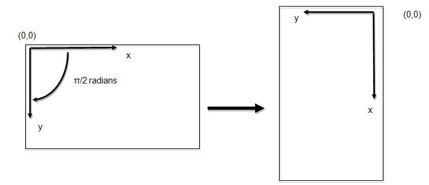
The rotation transformation matrix is as follows:
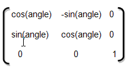
where the angle of rotation is in radians.
Adds a rounded-corner rectangle, specified by (x, y, w, h), to the path. The xRadius and yRadius arguments specify the radius of the ellipses defining the corners of the rounded rectangle.
object save() |
Pushes the current state onto the state stack.
Before changing any state attributes, you should save the current state for future reference. The context maintains a stack of drawing states. Each state consists of the current transformation matrix, clipping region, and values of the following attributes:
- strokeStyle
- fillStyle
- fillRule
- globalAlpha
- lineWidth
- lineCap
- lineJoin
- miterLimit
- shadowOffsetX
- shadowOffsetY
- shadowBlur
- shadowColor
- globalCompositeOperation
- font
- textAlign
- textBaseline
The current path is NOT part of the drawing state. The path can be reset by invoking the beginPath() method.
Increases or decreases the size of each unit in the canvas grid by multiplying the scale factors to the current tranform matrix. x is the scale factor in the horizontal direction and y is the scale factor in the vertical direction.
The following code doubles the horizontal size of an object drawn on the canvas and halves its vertical size:
ctx.scale(2.0, 0.5);
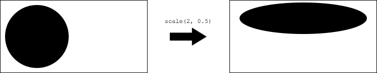
|
Sets the dash pattern to the given pattern.
pattern a list of numbers that specifies distances to alternately draw a line and a gap.
If the number of elements in the array is odd, the elements of the array get copied and concatenated. For example, [5, 15, 25] will become [5, 15, 25, 5, 15, 25].
 | var space = 4 ctx.setLineDash([1, space, 3, space, 9, space, 27, space, 9, space]) ... ctx.stroke(); |
This method was introduced in QtQuick 2.11.
See also getLineDash() and lineDashOffset.
Changes the transformation matrix to the matrix given by the arguments as described below.
Modifying the transformation matrix directly enables you to perform scaling, rotating, and translating transformations in a single step.
Each point on the canvas is multiplied by the matrix before anything is drawn. The HTML Canvas 2D Context specification defines the transformation matrix as:
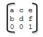
where:
- a is the scale factor in the horizontal (x) direction
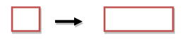
- c is the skew factor in the x direction
- e is the translation in the x direction
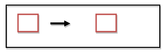
- b is the skew factor in the y (vertical) direction
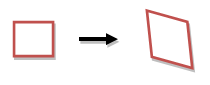
- d is the scale factor in the y direction
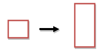
- f is the translation in the y direction
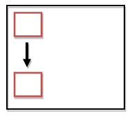
- the last row remains constant
The scale factors and skew factors are multiples; e and f are coordinate space units, just like the units in the translate(x,y) method.
See also transform().
Shears the transformation matrix by sh in the horizontal direction and sv in the vertical direction.
object stroke() |
Strokes the subpaths with the current stroke style.
See also strokeStyle and W3C 2d context standard for stroke.
Strokes the path of the rectangle specified by (x, y, w, h) using strokeStyle, lineWidth, lineJoin, and (if appropriate) miterLimit attributes.
See also strokeStyle, lineWidth, lineJoin, and miterLimit.
object strokeText(text, x, y) |
Strokes the given text at a position specified by (x, y).
See also font, textAlign, textBaseline, and fillText.
Adds the given text to the path as a set of closed subpaths created from the current context font supplied.
The subpaths are positioned so that the left end of the text's baseline lies at the point specified by (x, y).
This method is very similar to setTransform(), but instead of replacing the old transform matrix, this method applies the given tranform matrix to the current matrix by multiplying to it.
The setTransform(a, b, c, d, e, f) method actually resets the current transform to the identity matrix, and then invokes the transform(a, b, c, d, e, f) method with the same arguments.
See also setTransform().
Translates the origin of the canvas by a horizontal distance of x, and a vertical distance of y, in coordinate space units.
Translating the origin enables you to draw patterns of different objects on the canvas without having to measure the coordinates manually for each shape.